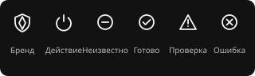

Удаление подписки
Указать количество удаляемых узлов. При активном маршруте объяснить, что произойдёт с соединением.
СЕТЕВОЙ КОНТРОЛЬ
Одно действие. Раздельное состояние компонентов.
Профиль DPI и выбранные дополнительные компоненты.
VPN-маршрут подключается отдельно.
Разрешение имён и шифрование DNS
Обработка выбранных доменов и IP
Служба и добавление прокси в Telegram
Отдельное соединение с выбранным сервером
DNS, маршрут и доступность целей. Последняя проверка пока отсутствует.
Сначала указать компонент, причину и последнее наблюдение. Восстановление не должно сбрасывать чужие настройки.
Выберите сервер и подключите VPN-маршрут.
Импортируйте ссылку подписки или файл конфигурации.
Доступность появится после отдельной проверки.
Выбор строки не подключает маршрут. У выбранного сервера появляется одно основное действие. Измерение задержки имеет время и метод.
Данные появятся после импорта. Секретный адрес скрыт.
Указать количество удаляемых узлов. При активном маршруте объяснить, что произойдёт с соединением.
Настройте разрешение имён и проверьте фактическую работу.
Изменение будет применено к поддерживаемым адаптерам. Перед применением перечислить затронутые адаптеры.
Показать собственную сохранённую конфигурацию, которую можно вернуть. Чужие изменения не перезаписываются.
Сначала измерить разрешение имени и соединение с целью раздельно. Общий успех не означает доступность всех сайтов.
Выбор обработки трафика, проверка целей и собственная служба.
Подбор временно проверяет доступность целей. Покажите цену операции и возможность отменить её.
Установка, автозапуск и текущая готовность проверяются отдельно. Удаление и сброс доступны с описанием последствий.
Проверок пока нет. Сохраняйте время, выбранный профиль, все цели и неполный результат.
Перед применением показывать только реальную ошибку формата; адреса не исправлять скрыто.
Сначала подготовьте прокси. Затем добавьте его в Telegram.
Проверить файлы, права и режим запуска.
Работа процесса и слушателя — локальная проверка. Доставка сообщения проверяется отдельно.
Открытие ссылки не подтверждает принятие настройки приложением Telegram.
Журнал не загружен. Здесь показываются реальные события с временем и полным доступным сообщением.
Остановка изменяет желаемое состояние. Supervisor не должен снова запускать службу без команды пользователя.
Поведение приложения, обновления и диагностика.
Версия, доступный релиз и последний результат проверки должны приходить от backend. Сейчас данных нет.
Перед установкой указать версию, результат проверки подписи и затронутые компоненты.
Локальные журналы и состояние компонентов. Перед экспортом скрыть секреты и показать путь архива.
Состояние и выбор подключения видны отдельно.
Нажмите на щит для проверки
Профиль DPI · DNS · Telegram
Выбор флажка меняет намерение. Готовность отображается отдельно. Непроверенный статус допускает только проверку; после неё доступно подключение.
Это описание сценария. Реальное приложение не закрывалось.
Трей и закрытое приложение различаются. UI должен показывать эту границу до закрытия, не обещая общий режим «всё работает без приложения».
Спецификация, не имитация состояния служб.

Hover не меняет состояние компонента. Новое действие заменяет переход, старый callback не устанавливает успех. Reduced motion убирает декоративное движение. Фокус возвращается инициатору закрытого диалога.